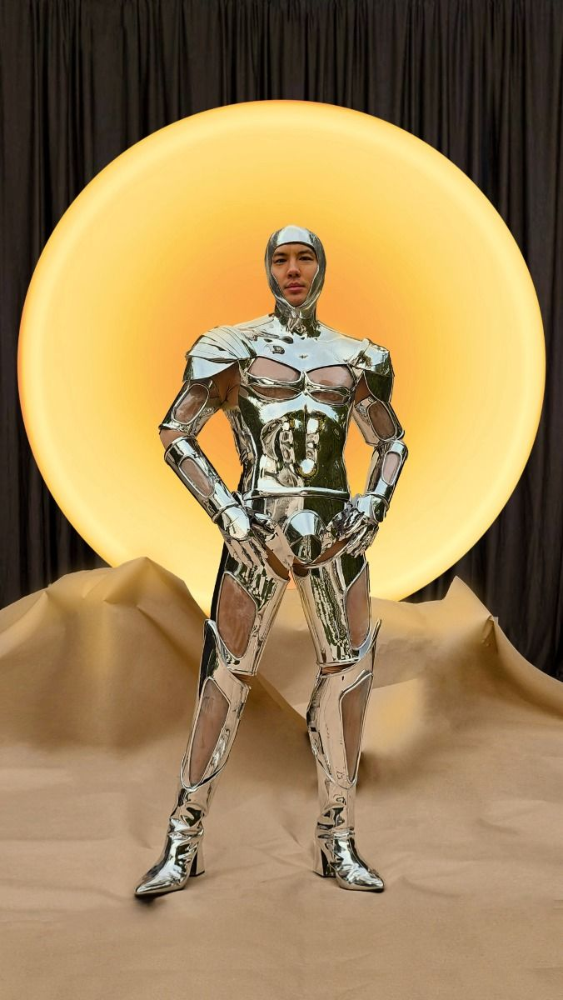
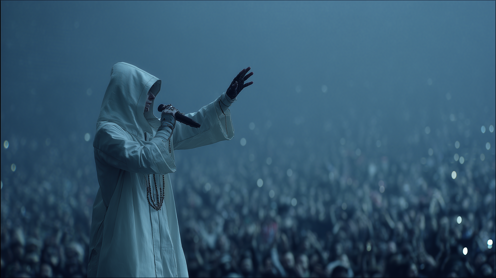

Ascenza was created to explore a future where faith and technology collide, not in conflict, but in a desperate pursuit of survival.
As the boundary between human and machine dissolves, the question of what truly defines the self becomes unavoidable. By denying the existence of a soul and treating consciousness as fragile data, Ascenza challenges the romanticism of humanity and exposes the fear beneath our dependence on flesh.
The world of Ascenza is a mirror held up to our modern anxieties — our dread of death, our obsession with permanence, and our willingness to surrender autonomy for the promise of transcendence.
"It is a thought experiment disguised as a cult: a speculative religion born from the insecurities of a dying species trying to upload its way out of oblivion."
DEV_LOG
// GENESIS PROTOCOL
This project began as a simple idea: a fashion brand set in the world of Cyberpunk 2077, borrowing its aesthetics, corporations, and in-game religions as stylistic inspiration. As the concept developed, it drifted away from pure branding and moved toward worldbuilding, asking what kind of techno-religion might realistically emerge in such a universe.
That question led to the creation of Ascenza, a composite cult built from various fictional factions in the game and grounded in a real historical event—the 1992 Korean “Rapture” hysteria. The mass panic around a promised second coming became the emotional and structural template for Ascenza’s own prophecy: the Collective Emergence.
From there, the project naturally evolved into a narrative-driven experience. To keep it feeling like an in-universe secret—something you’d stumble upon like an easter egg—the format shifted toward an ARG-style structure, inviting the audience not just to read about Ascenza, but to slowly discover it.

FIG 2.1 // CONCEPT VISUALIZATION A

FIG 2.2 // CONCEPT VISUALIZATION B